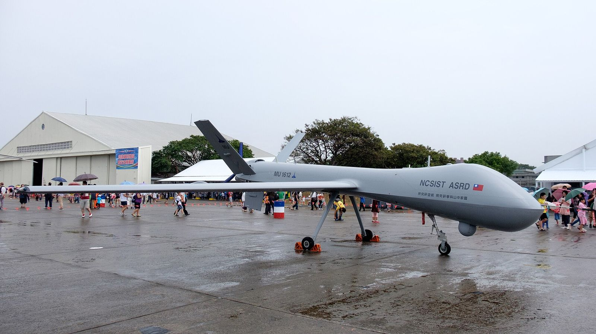

載入中…
- 今年決標
- —
- 今年金額
- —
- 招標中
- —
- 歷年金額
- —
01哪裡製造
決標金額依機關填報的原產地國別歸戶，沒填的不計入，不含對美軍購與工程類。
—
左邊長條是該年國內決標總額；右邊短條永遠滿格，只表示當年原產地組成。
02每季決標金額
一根是一季，2016 年起，不含對美軍購與工程類。
03哪一類
決標金額依標案用途分類，規則寫在方法頁，不含對美軍購與工程類。
04競爭程度
依決標案的投標家數分組，只算有填投標家數的案子，不含對美軍購與工程類。
—
05錢的流向
左邊出錢的機關群組，右邊收錢的廠商，帶子寬度就是金額；廠商取前八名。
每個群組底下是拿最多錢的三家廠商，廠商取前八名。
06最近
最近 60 天的公告。
07標的物

攝影：玄史生，CC0，Wikimedia Commons
08不在圖表裡的／同系列
經美國在台協會的對美軍購，以及金額最大的幾件工程類標案，量級與國內採購不同，單獨列在這裡。
同系列
標案看政府買進多少，出口看台灣賣出多少；論文與戰場是另外兩條線。